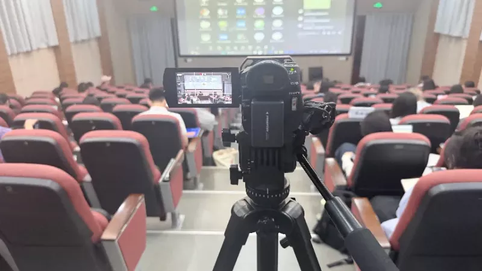
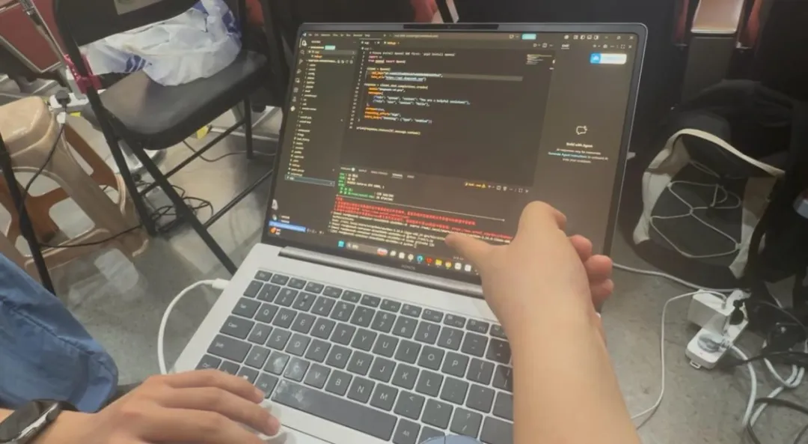
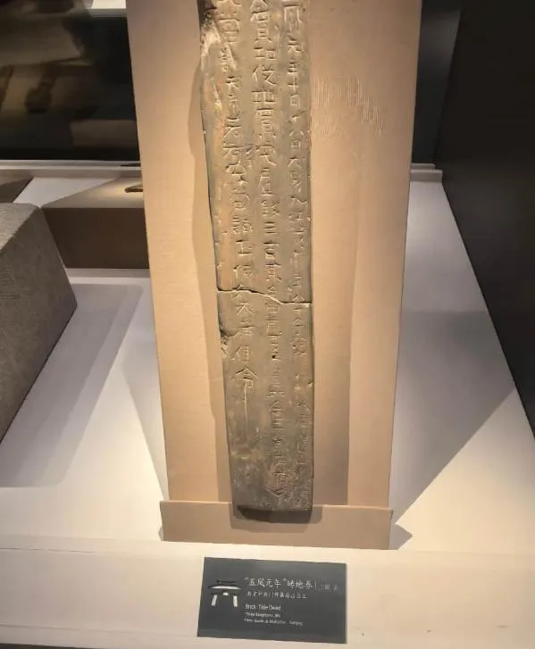
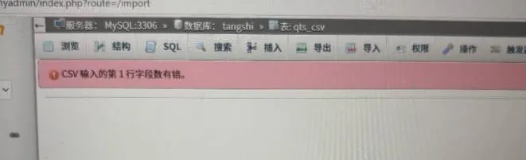
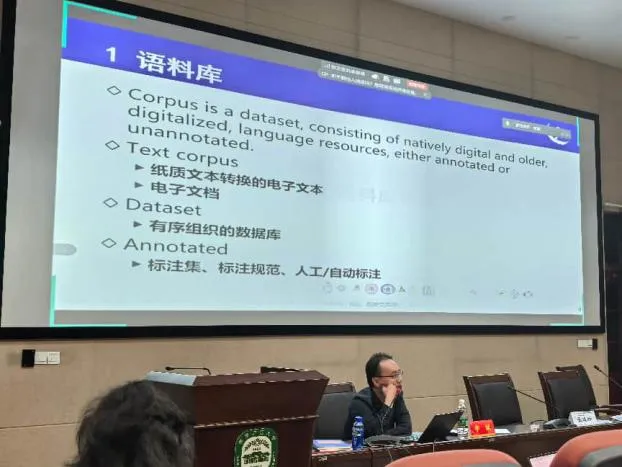
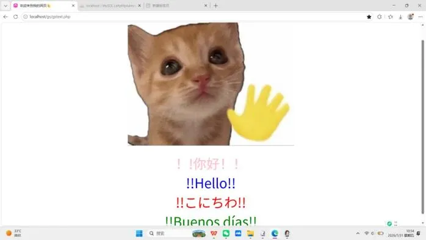
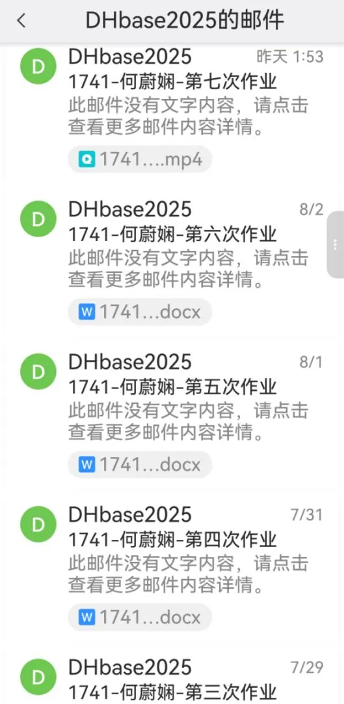
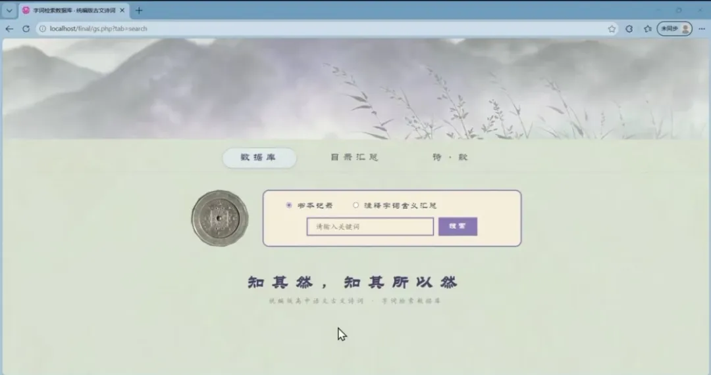

HKUST, with Nanjing Normal University, the University of Macau, Beijing Normal-Hong Kong Baptist University and Nanjing Agricultural University, held the 4th Summer College of Corpora and Digital Humanities (CDH Summer 2026) in Nanjing. Two HKUST students wrote about their twelve days there.
Ruimin HONG 洪瑞敏, Year 4, BA in Global China Studies
I was lucky to be admitted to the fourth Summer College, and to spend twelve days in Track C. The schedule was dense and the work was hard, but so was what came back: a great deal of knowledge, a model I built myself, and friendships I did not expect.
Before the College, large language models were a daily convenience to me. I used them to polish text and draft emails, and I rarely asked how the answers were produced. Over those twelve days, starting from renting a remote server and calling an API, we moved through fine-tuning and retrieval-augmented generation until each of us could produce a working model. The teachers explained the principle first and then walked us through the operation, and when I got stuck, the instructors and teaching assistants came to my desk and stayed until I understood. Evening sessions were meant to end at nine; they often ran to half past ten.
The idea that stayed with me is RAG. I had always wondered why a model can answer so confidently and still be wrong. Retrieval-augmented generation showed me how a model can consult an external knowledge base before answering, which does not remove hallucination but makes answers more reliable. I built one for my final project, and the passage from a question I had carried around for months to an application that actually runs is the part I will remember.

I also volunteered with the photography team, filming classes and helping with the opening and closing ceremonies. Fitting that around the coursework meant less sleep than I would have liked, but it introduced me to people from other universities, other disciplines and other stages of study. When my laptop refused to install the software we needed, a colleague from computer science sat down with me until it worked. Interdisciplinary study, I learned, is not only about touching other fields; it is about people with different training solving a problem together.

A brick land deed seen at the museum
Weixian HE 何蔚娴, Year 1, MA in Chinese Culture
If I had to sum up the eleven days in Nanjing in one feeling, it would be the shock of having my assumptions broken, one after another.

Error messages, most evenings

The first evening class
The visit to the Six Dynasties Museum stayed with me. Standing in front of objects whose inscriptions are too small to read, I began to think about what digital tools could do here: showing the original text and a plain-language gloss side by side, the way the interactive displays at the National Archaeological Museum do, without disturbing the room. Technology is never the end in itself. When digital tools are rooted in the sources and paired with humanistic interpretation, an exhibition can be both clear and beautiful. I arrived thinking such displays were simply fun; I left asking how the interaction is built, and what I could do with it in my own research.

My first web page

Homework finished the same day, however late
The evening labs were the other surprise. I had avoided databases and code for years, and had carefully steered around the university's digital humanities courses during my master's. At the College I could not avoid them, and the track was gentler than I feared: each evening built on the last, and by the end I had assembled a corpus and written a working web page from scratch. I was almost always the last to leave the Q&A, and my work was full of error messages and failed imports. But troubleshooting, again and again, is what dissolved the fear.

My final project
What the College changed most was how I think. In the discussions, other students asked sharp, worthwhile questions, and I often could not. That taught me that a good question needs stored knowledge and practice behind it. Statistics and computation will not replace close reading; they are a bridge that tests intuition, widens the scale of observation, and turns a vague impression into evidence that can be discussed.